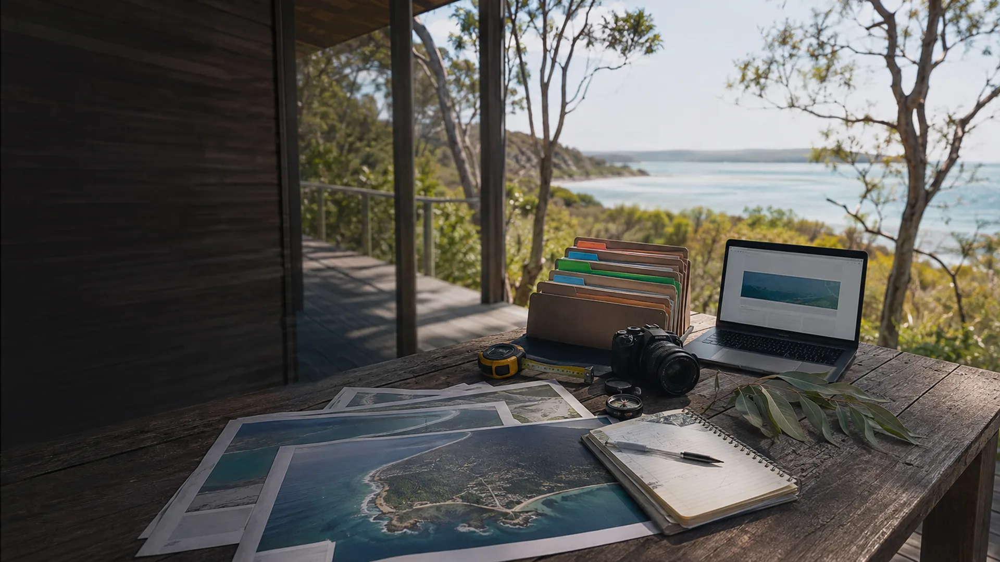

A supplied map traces 54,281.67 square metres inside the existing firebreak. Local descriptions supply the wider 15-acre figure, ground conditions, turning area and current dwelling. The trace is not a boundary survey.

Source trail and working inputs.
Supplied maps, local descriptions and public references are identified by the part of the site they support.
Direct inputs used in this site.
A Gemini Flash guestimate supplies one full-site arithmetic exercise using the working map area. Its building footprints, bay counts, track allowance and land-use allocations are indicative assumptions rather than surveyed or design-confirmed figures.
A supplied map traces about 3,728 square metres with a measured perimeter of about 372 metres. Recent local information describes the area as another former loading place for quartz silica sand. Site history, boundaries, tenure, access and present conditions still require checking.
A supplied map traces 13,668.86 square metres. Earlier local research records property, planning and site-history leads that still require current verification.
The early local prototype explores longitudinal records linking health, lived experience and place. A separate Software as a Medical Device plan exists but is not yet fully developed.
Recent local conversations inform the site and service ideas. They are not formal minutes, agreements or endorsements.
Public references used directly.
Ready S.E.T. Co-op Trust Hub ↗ supplies the earlier property trail and detailed public-hub proposal.
Ballow Road Sand and Screen Hub ↗ supplies the earlier 10 to 12 Ballow Road study and program research. Its location focus is not treated as a current selection.
Community Club Builder: Sandy Sports ↗ supports portable trials, local roles and evidence from repeated activity.
Straddie Capsule Surge Lab ↗ supports modular accommodation, shared facilities and visiting-specialist ideas.
Ready S.E.T. Co-op Cultural Intelligence Node ↗ and Moreton Bay Community Wealth and Mutuals ↗ support the connected-project and community-wealth framing.
Open the source documents.
The public document library includes the submissions, planning drafts, research conversations and handover material used while shaping these pages. Each file keeps its original status and does not become an agreement or verified fact by appearing here.